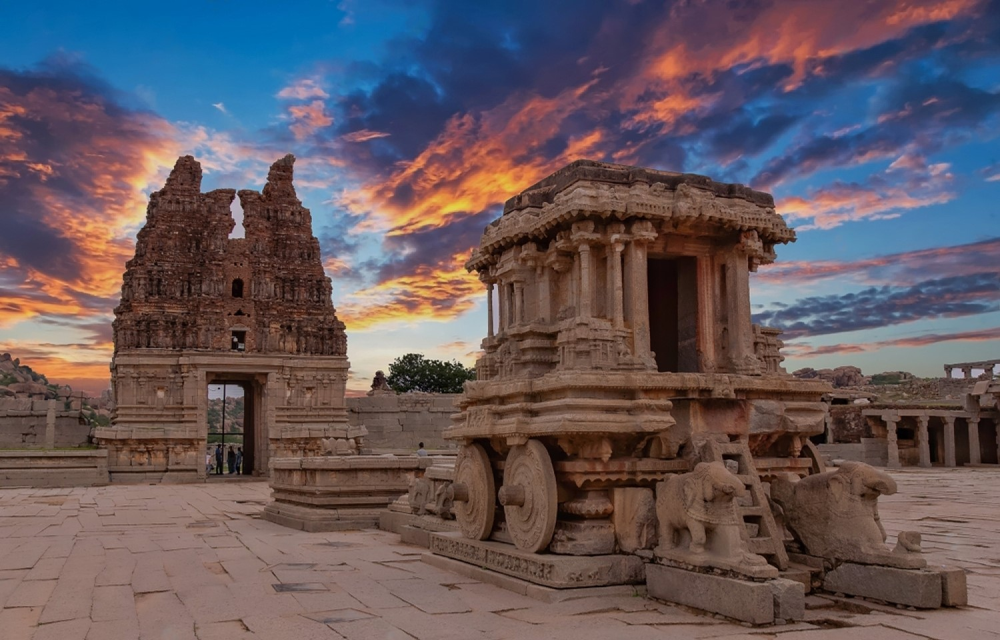
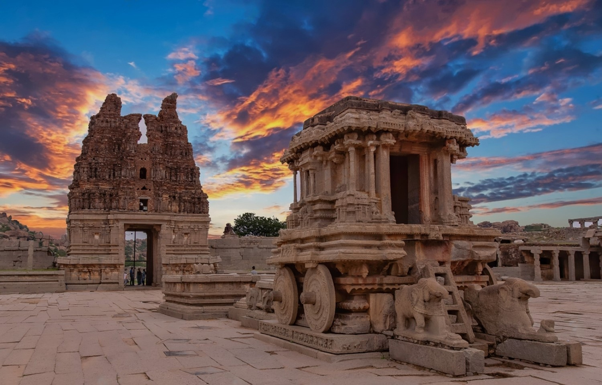

Commercial street Local vendors
The Commercial Street is a street in Bangalore, the state capital of Karnataka, India. This is the best street shopping destination in Bangalore. It is fondly named Comm Street. This is the place where you’d find everything on the adjacent Shoe Path. One of the oldest and busiest shopping areas of the city, the street is famous for its trade in embroidered bridal blouses, gowns, and dress fabrics. To trendy western clothing, jewelry, books,shoes and electronics. It is a one-stop shop for clothes, fake jewelry, athletic goods, and footwear purchases. You can look at affordable rates for antiques and linen for your house as well. Commercial Street is crowded, and you must be prepared to walk a lot, therefore.The lively atmosphere which is always abuzz with activity and the mad, mad rush of the local market make Commercial Street every shopaholic's delight.
1. Shivoham Shiva Temple
2. Cubbon Park
3. Bengaluru Palace
4. Bull Temple Rd
Navigate to the location
 
Virupaksha temple-Hampi Hampi
Hampi, the city of ruins, is a UNESCO World Heritage Site. Situated in the shadowed depth of hills and valleys in the state of Karnataka, this place is a historical delight for travellers. Surrounded by 500 ancient monuments, monolithic sculptures, beautiful temples, bustling street markets, bastions, treasury building and captivating remains of Vijayanagar Empire, which are a major part of its tourism, Hampi is a backpacker's delight and attract travelers because of their excellent workmanship. The Hindu style of architecture found at Hampi reflects the splendor of the Vijayanagara Empire. The rugged landscape adds to the historic ambiance of this site.Hampi is an open museum with 100+ locations to explore and a favourite way to see the city from the perspective of its history.
1. Virupaksha temple at Hampi
2. Ruins of Vijaya Vittala Temple
3. Lotus Palace
4. Hippie Island
Navigate to the location

Local markets MG Road
MG Road or Mahatma Gandhi Road is one of the most busiest and well known streets of Bangalore.It was known as South Parade during the pre-independence era but was renamed as Mahatma Gandhi Road or MG Road on 26th February 1948. Today, MG Road is best known for its amazing shopping experience, restaurants, cafes and food outlets offering delectable delicacies. MG Road is a major commercial and cultural hub in the city, also well-connected to other parts of Bangalore, making it a central location for many activities.
1. Virupaksha temple at Hampi
2. Ruins of Vijaya Vittala Temple
3. Lotus Palace
4. Hippie Island